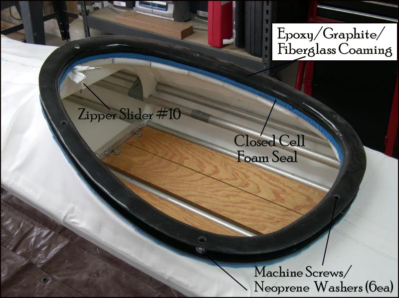

| Fiberglass Coaming (3 of 4) | Menu Previous Page Next Page |
|
 Fiberglass Coaming / Baseplate - The fiberglass coaming bolts through the HDPE base plate, deckridge, and cross sections 4 and 5 ( Sea Rover shown) for a secure attachment. Six 10/24 machine screws are used to attach the coaming to the cross sections and base plate. Closed cell foam (1/2") is used to seal the coaming. A more watertight method of attaching the fiberglass coaming ( no baseplate) is described on the next page. |
|